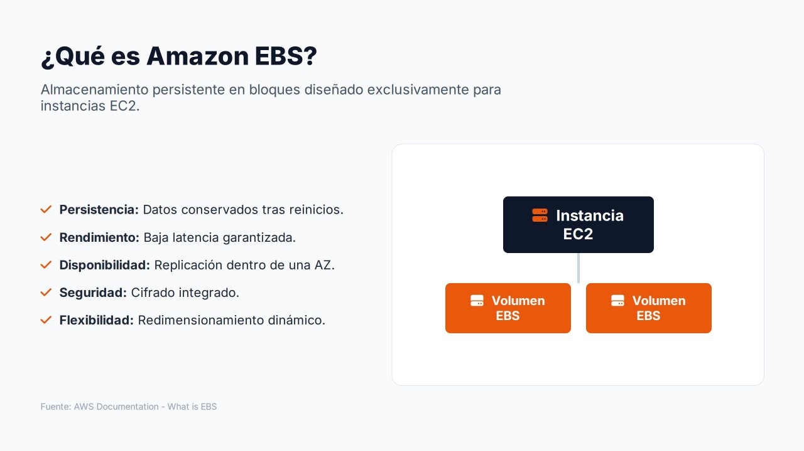
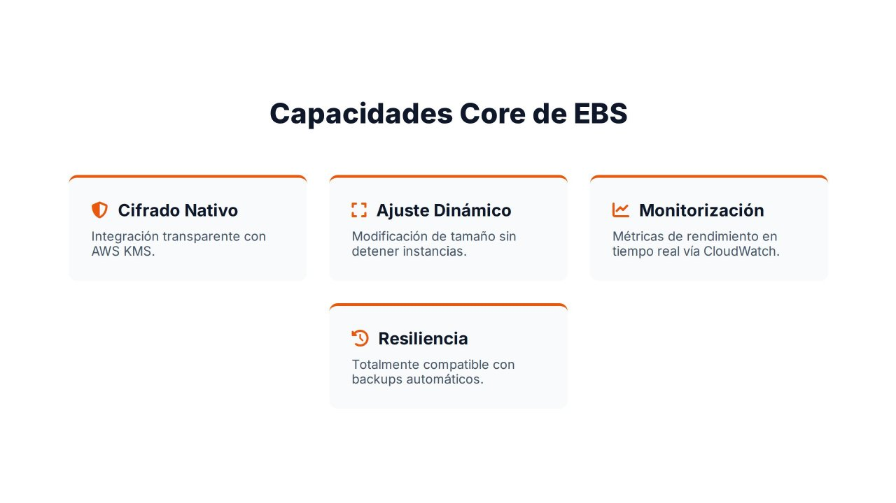

Amazon EBS: visión general y capacidades¶

Cuando se despliega una instancia EC2 se necesita un lugar donde almacenar de forma permanente el sistema operativo, las aplicaciones, las bases de datos y los datos de usuario. La memoria RAM pierde su contenido al apagarse la máquina y el almacén de instancia desaparece cuando esta se detiene o se reemplaza. Hace falta, por tanto, un almacenamiento persistente y fiable.
Amazon Elastic Block Store (Amazon EBS) proporciona volúmenes: discos virtuales que se conectan a las instancias EC2 de forma muy similar a como se conectaría un SSD físico a un servidor. El sistema operativo detecta el volumen como un dispositivo de bloques normal sobre el que se crean particiones y sistemas de ficheros.
Este apartado presenta las características del servicio. Los siguientes estudian los tipos de volúmenes, las instantáneas, las funcionalidades avanzadas Multi-Attach y reservas NVMe y el ciclo de vida completo de un volumen.
Características principales¶
| Característica | Descripción |
|---|---|
| Persistencia | Los datos se conservan aunque la instancia se reinicie o se detenga. El volumen existe con independencia del estado de la máquina virtual |
| Rendimiento | Distintos tipos de volumen con niveles definidos de IOPS y rendimiento (MiB/s), desde servidores web hasta bases de datos de misión crítica |
| Disponibilidad | Cada volumen se replica automáticamente dentro de su zona de disponibilidad, lo que lo protege frente al fallo de un componente físico |
| Seguridad | Cifrado con AWS KMS de los datos en reposo, de los datos en tránsito entre la instancia y el volumen, y de las instantáneas |
| Flexibilidad | Se puede ampliar la capacidad y modificar el tipo y el rendimiento sin detener la instancia (Elastic Volumes) |
EBS es almacenamiento en bloques
EBS no es almacenamiento de objetos como Amazon S3 ni un sistema de ficheros compartido como Amazon EFS. Un volumen se conecta, en general, a una única instancia y reside en una única zona de disponibilidad. Por eso se considera uno de los pilares de la infraestructura de cómputo en AWS: cuando una instancia necesita arrancar un sistema operativo, alojar una base de datos o ejecutar una aplicación con acceso constante a disco, EBS suele ser la solución.
Conceptos básicos¶
| Concepto | Descripción |
|---|---|
| Volumen | Disco virtual con un tamaño, un tipo y un rendimiento. Se identifica como vol-0123456789abcdef0 |
| Volumen raíz | Volumen desde el que arranca la instancia. Se crea a partir de la AMI al lanzar la instancia |
| Volumen de datos | Volumen adicional adjuntado a la instancia para separar los datos del sistema operativo |
| Adjuntar (attach) | Conectar un volumen a una instancia de la misma zona de disponibilidad |
| Nombre de dispositivo | Nombre con el que se adjunta (/dev/sdf, /dev/xvdf). En las instancias Nitro el sistema operativo lo ve como dispositivo NVMe (/dev/nvme1n1) |
| Instantánea (snapshot) | Copia de seguridad incremental del volumen en un instante, almacenada de forma regional |
| IOPS | Operaciones de entrada/salida por segundo que admite el volumen |
| Rendimiento (throughput) | Cantidad de datos por segundo, en MiB/s |
| Eliminar al terminar (DeleteOnTermination) | Atributo que indica si el volumen se borra al terminar la instancia. Por defecto sí en el volumen raíz y no en los volúmenes de datos |
Relación con la instancia¶

- Una instancia puede tener varios volúmenes adjuntos (el raíz y varios de datos).
- Un volumen se adjunta, en general, a una sola instancia; la excepción es Multi-Attach, que se estudia más adelante.
- El volumen y la instancia deben estar en la misma zona de disponibilidad. Para utilizar los datos en otra AZ se crea una instantánea y, a partir de ella, un volumen nuevo en la zona de destino.
- Un volumen puede desadjuntarse de una instancia y adjuntarse a otra, lo que resulta muy útil en operaciones de mantenimiento, migración o recuperación de incidencias (por ejemplo, para reparar el disco raíz de una instancia que no arranca).
Capacidades principales¶
Cifrado nativo¶
EBS puede cifrar los volúmenes con claves gestionadas en AWS Key Management Service (KMS). El cifrado es transparente: el sistema operativo y las aplicaciones no necesitan ninguna modificación. Al cifrar un volumen quedan protegidos:
- Los datos en reposo dentro del volumen.
- Los datos en tránsito entre la instancia y el volumen.
- Todas las instantáneas creadas a partir del volumen y los volúmenes creados a partir de esas instantáneas.
El cifrado puede activarse por defecto en cada región, de modo que todos los volúmenes nuevos se cifren aunque nadie marque la opción. Se desarrolla en el apartado de cifrado e infraestructura como código.
Ajuste dinámico de recursos (Elastic Volumes)¶
En una infraestructura tradicional, ampliar un disco implica interrupciones, sustitución de hardware o migraciones. En EBS se puede aumentar el tamaño, cambiar el tipo de volumen y modificar las IOPS y el rendimiento mientras el volumen está en uso. Es especialmente útil cuando una aplicación crece más rápido de lo previsto o una base de datos necesita espacio adicional.
Monitorización integrada¶
EBS publica métricas en Amazon CloudWatch cada minuto y sin coste: operaciones de lectura y escritura, bytes transferidos, latencia media, longitud de la cola y comprobaciones que indican si la aplicación está intentando superar las IOPS o el rendimiento aprovisionados. Permiten detectar cuellos de botella y planificar la capacidad con datos reales.
Resiliencia¶
La replicación interna de EBS protege frente a fallos físicos, pero no frente a errores humanos, fallos de software o la pérdida de una zona de disponibilidad. Para eso están las instantáneas, que permiten recuperar información borrada o restaurar sistemas a un estado anterior, y que pueden automatizarse con Amazon Data Lifecycle Manager o AWS Backup.
Reparto de responsabilidades¶
| Tarea | Responsable |
|---|---|
| Hardware, replicación dentro de la AZ, durabilidad del volumen | AWS |
| Elección de la AZ, el tipo, el tamaño y el rendimiento del volumen | Cliente |
| Particionado, sistema de ficheros, montaje | Cliente (sistema operativo) |
| Ampliar el sistema de ficheros tras ampliar el volumen | Cliente |
| Activar el cifrado y gestionar las claves | Cliente |
| Programar instantáneas y su retención, copiarlas a otra región | Cliente |
| Permisos de IAM sobre volúmenes e instantáneas | Cliente |
Referencias¶
- AWS. What is Amazon EBS? — Guía del usuario de EBS
- AWS. Amazon EBS volumes — Volúmenes de EBS
- AWS. Amazon EBS encryption — Cifrado de EBS
- AWS. Amazon EBS Elastic Volumes — Modificación de volúmenes
- AWS. Device names for volumes on Amazon EC2 instances — Nombres de dispositivo